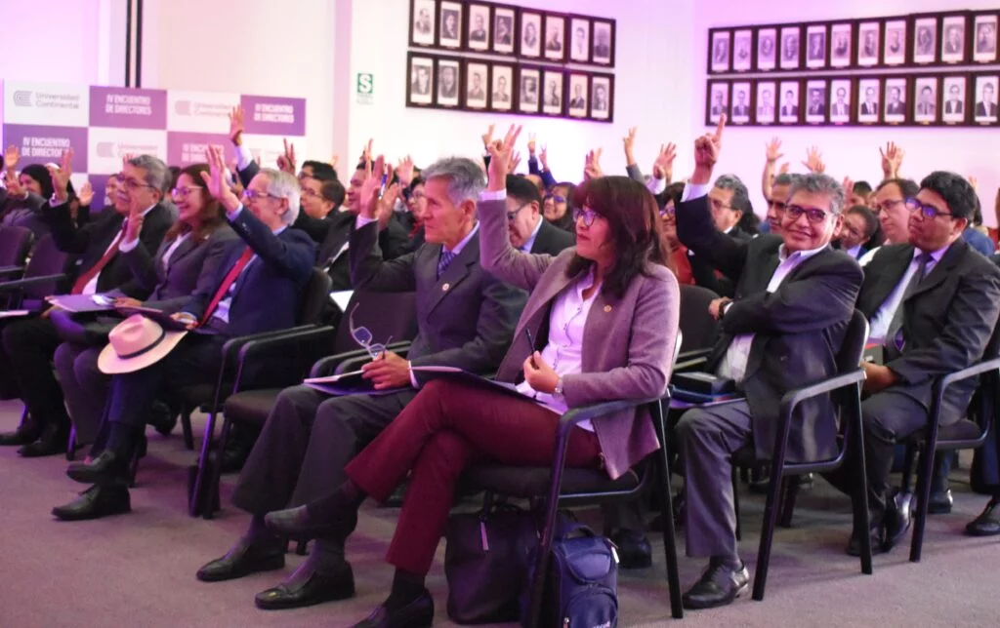
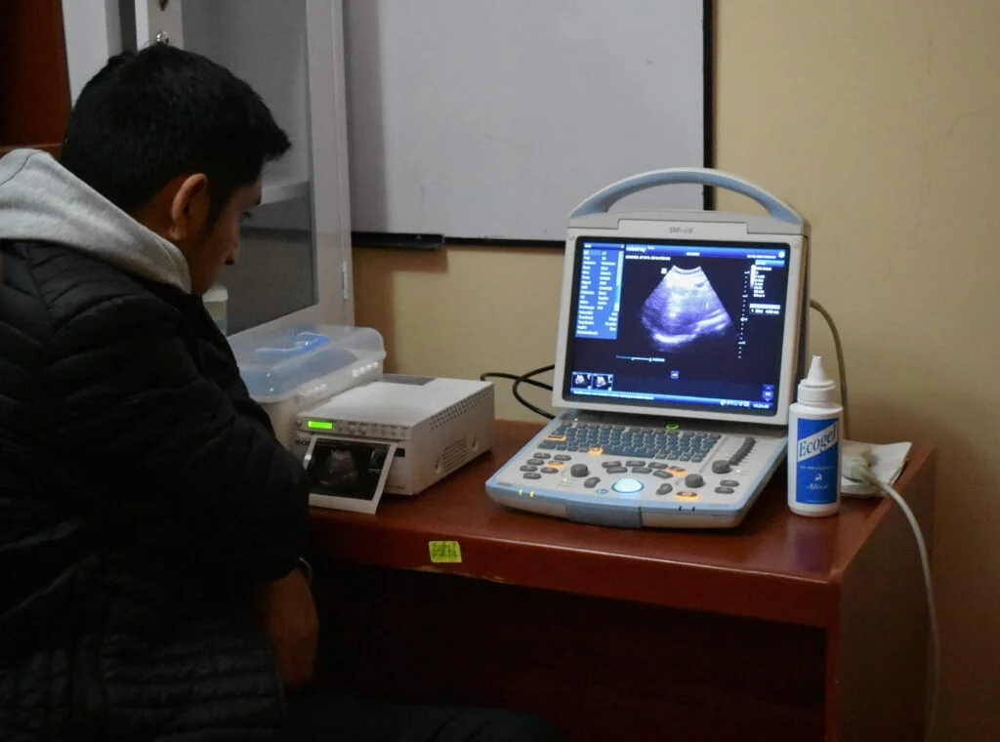
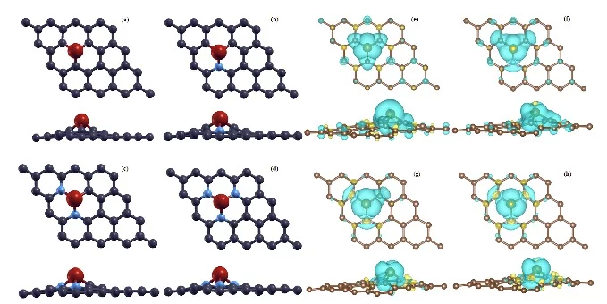

Con una metodología educativa centrada en la experiencia y la práctica, con profesores especialistas en
su
campo
y acuerdos internacionales que ofrecen una perspectiva global de la profesión.
Seleciona el campus y conoces las modalidades disponibles:
Ingenieria de Sistemas e Informatica Para los que quieren
Impulsar la innovación mediante el uso de la tecnología, la digitalización y la automatización para
cambiar
el mundo, con una visión emprendedora, que permita planificar, gestionar y liderar grandes proyectos
informáticos.
RAZONES
5 estrellas
En la categoría Aprendizaje en Línea. Fuente: QS Stars Rating System
Top 3
De universidades privadas que destacan por el impulso de la investigación científica y
académica. Fuente: Scimago Institutions Ranking 2022.
Top 5
De las carreras de ingeniería mejor pagadas en el Perú. Fuente: Ministerio de Trabajo y
Promoción del Empleo.
Top 10
De las carreras más solicitadas en el Perú. Fuente: ponteencarrera.pe
EXPERIENCIA
Conoce la experiencia de estudiar Ingeniería de Sistemas e
Informática
Obtén una visión global y emprendedora para planificar, liderar proyectos informáticos y evaluar la
implementación de infraestructuras tecnológicas digitales empleando enfoques de Ingeniería de software y
herramientas que garanticen productos de calidad.
Convenios Internacionales
Contamos con Membresías de: CISCO Academy, ACM, Certiport , Project Management Institute (PMI),
The
Open
Group, e International Institute of Business Analysis – IIBA
Experiencia y conocimiento
Docentes expertos que ejercen en la industria y en su área de especialización, pues cuentan con
maestrías y grados realizados en el extranjero.
Malla Curricular
Nuestra malla curricular moderna con certificaciones progresivas desde el octavo ciclo.
Laboratorio - Softwares y Simuladores
Laboratorios de realidad virtual e innovación en Huancayo, así como redes y software avanzado.
También, se ofrecen Kits ROBOT TXT Explorer de Fischertechnik para aprender programación y
robótica.
CONVENIOS
Conoce nuestros Convenios Internacionales
Contamos con un convenio de doble titulación y varios convenios de
intercambio estudiantil.
Universidad del Oeste de Santa Catarina Brasil Conoce omo
aplicar
Universidad Andres Bello Chile Conoce omo aplicar
Universidad Central de Chile Chile Conoce omo aplicar
Universidad Autonoma de Mexico Mexico Conoce omo aplicar
CARRERAS SIMILARES
Facultad de ingenieria
Ingeniera Ambiental
Los ingenieros e ingenieras ambientales implementan estrategias innovadoras para resolver problemas
ambientales y prevenir el impacto negativo de las actividades humanas, garantizando la restauración
y mantenimiento de ecosistemas funcionales.
Mas Detalle
Facultad de ingenieria
Ingeniera de Minas
Las ingenieras e ingenieros mecatrónicos diseñan disruptivos productos y procesos automatizados que
cambiarán el rumbo del planeta.
Mas Detalle
Facultad de ingenieria
Ingeniera de Mecatronica
Las ingenieras e ingenieros mecatrónicos diseñan disruptivos productos y procesos automatizados que
cambiarán el rumbo del planeta.
Mas Detalle
NOTICIAS Y EVENTOS
Noticias y Eventos
Vive al máximo tu carrera universitaria y asiste a los diversos eventos, convocatorias, charlas informativas
que organiza la Universidad Continental. También, te compartimos las últimas noticias, avances y entrevistas
de tu campo profesional

IV Encuentro de Directores UC reunió a más de 100 líderes académicos en Arequipa
Directores y docentes de los principales colegios de la Ciudad Blanca se capacitaron en la línea de
transformación digital e innovación.

Investigación UC revela alta prevalencia de quistes hepáticos en comunidades ganaderas de Junín
Incidencia de la enfermedad se debería a la ingesta de alimentos y agua contaminada por heces de perros
portadores del parásito Echinococcus granulosus.

Prestigioso Langmuir Journal publica artículo científico de la Universidad Continental
Es un aporte al impacto ambiental, pues el cambio climático es un problema mundial, en especial la
emisión de gases invernadero como el dióxido de carbono.
Preguntas Frecuentes
Preguntas Frecuentes
Sobre la universidad
¿Cuáles son las modalidades de estudio?
Contamos con tres modalidades de estudio, presencial, semipresencial y a distancia. Más información, aquí:
http://bit.ly/3jT4TI9 ¿Cuánto es lo que voy a pagar?
Contamos con diferentes escalas de pago. Esta información te la brindaremos una vez iniciado tu proceso de
admisión. Comunícate con un asesor aquí: http://bit.ly/3jT4TI9 ¿Tienen convenios internacionales con otras universidades?
Sí, contamos con más de 280 convenios internacionales para que puedas vivir una experiencia internacional
con nosotros. Conoce más, aquí: https://ucontinental.edu.pe/uc-global/ ¿Cómo puedo hacer para trasladarme a la Universidad
Continental?
Revisa los requisitos para traslados aquí:
https://postulantes.ucontinental.edu.pe/admision/quiero-cambiarme-de-universidad/ ¿Cuáles son las becas que me ofrece la Universidad Continental?
Porque creemos en ti, en tu talento y en tus competencias para hacer posible lo imposible, diseñamos Becas
Impacto Positivo, un programa de soporte integral, que te garantizará un ecosistema de enseñanza –
aprendizaje, flexible y acorde a tus necesidades, para que puedas desarrollar tus competencias digitales y
humanas y así lograr tus sueños y convertirte en un líder de impacto positivo. Conoce más, aquí:
https://ucontinental.edu.pe/becas/
Solicita información
SERVICIOS Growth Center Continental
Hub de información
Internacionalización
Wichay – Incubadora de Startups
Vive Continental
Investigación
Oportunidades laborales
PROGRAMAS Carreras de pregrado
Semipresencial
A Distancia
Centro de idiomas
Continental University of Florida
Escuela de Posgrado
Educación continua
Instituto Continental
MÁS INFORMACIÓN Blog
Portal del postulante
Portal del estudiante
Portal de padres
Portal del docente
INFORMACIÓN INSTITUCIONAL Conecta
Repositorio Institucional
Transparencia
Proveedores
Registrar denuncias por hostigamiento sexual
Política de privacidad
Esta empresa cumple con los más altos estándares de impacto social y ambiental
Universidad Continental S.A.C. R.U.C. No. 20319363221